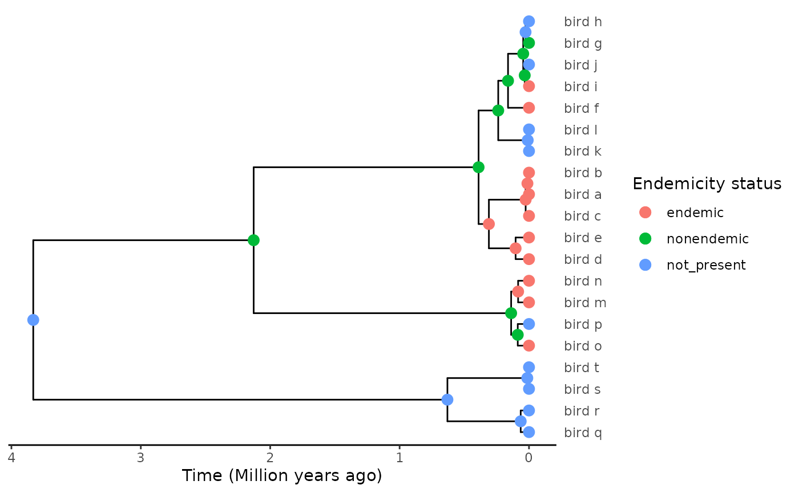
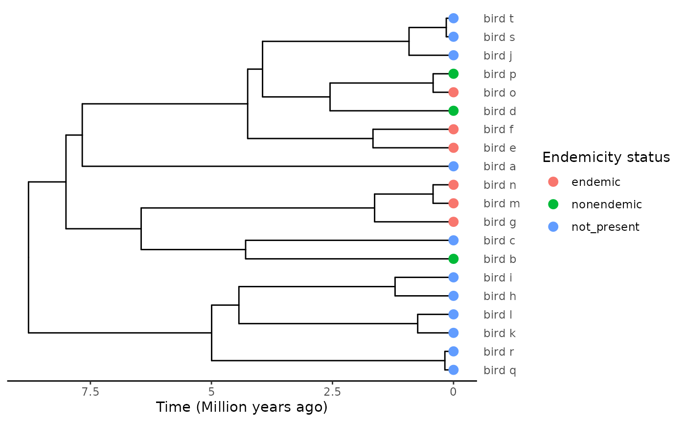
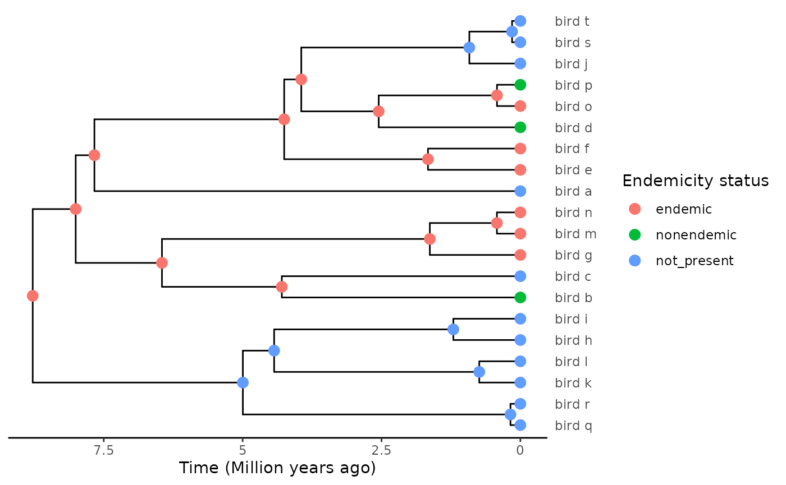
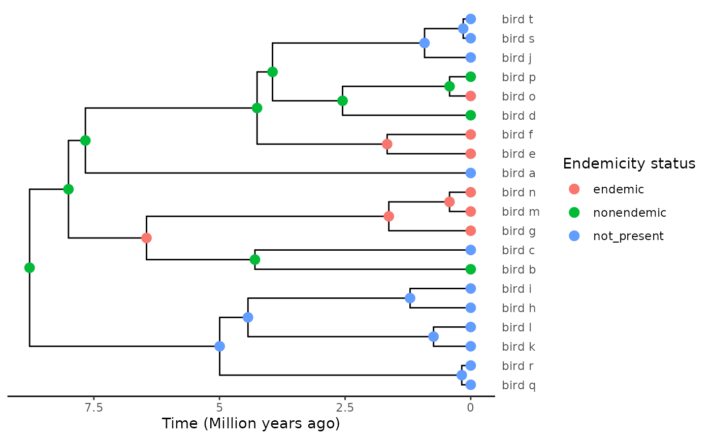

Introduction
In this tutorial we demonstrate how users can perform ancestral state
reconstruction using the functions implemented in
DAISIEprep, or, alternatively, by importing ancestral range
reconstructions obtained using methods from other packages.
Using DAISIEprep’s min and
asr algorithms
The core feature of DAISIEprep is the function
extract_island_species(), which allows one to extract the
island data expected as input by DAISIE’s functions from a
phylogeny with data regarding presence / absence of each present-day
species from the island. The function automatically delineates and
extracts clades formed by island species within a complete mainland +
island phylogeny, and attempt to estimate the age of colonisation for
each of these clades.
The default option of the function is the min algorithm,
which performs the data extraction in a manner consistent with DAISIE’s
assumptions. However, there may be cases where it is not desirable to
use this algorithm, particularly if some of DAISIE’s assumptions are at
odds with the clade at hand. For example, consider the following
tree:
We have an island clade, comprising species a-f, except for species e
which is absent from the island. A parsimonious explanation for this
distribution would be a unique colonisation event before the split
between the f and a-e lineages, with the island population of species f
not diverging from its mainland ancestor, and species e jumping back to
the continent. This would result in a single island clade with a unique
colonisation time. Yet if we run extract_island_species
through this phylogeny:
extract_island_species(phylod, extraction_method = "min")
#> Class: Island_tbl
#> clade_name status missing_species col_time col_max_age branching_times
#> 1 bird_a endemic 0 0.09053720 FALSE NA
#> 2 bird_b endemic 0 0.06146596 FALSE 0.016781....
#> 3 bird_d endemic 0 0.05480904 FALSE NA
#> 4 bird_f nonendemic 0 0.58496106 FALSE NA
#> min_age species clade_type
#> 1 NA bird_a 1
#> 2 NA bird_b, .... 1
#> 3 NA bird_d 1
#> 4 NA bird_f 1The algorithm estimates four independent colonisation events. This is
because the min algorithm assumes no back-colonisation
(from island to mainland), such that the presence of mainland-only
species e inside the island-only clade can only be accommodated by the
lineage staying on the mainland until the present, with at least three
colonisation events leading to species a-d. DAISIE would also not
consider a colonisation time before the (a-e)-f split, as any
cladogenetic event taking place on the island is assumed to lead to
strictly endemic lineages (Valente et al.
2015), while lineage f maintains a population on the
mainland.
For such cases where the phylogeny is at odds with the process
considered by DAISIE, one may wish to resort to other trait evolution /
biogeography model to estimate when and how many times the island was
colonised. This requires performing ancestral state reconstruction, to
estimate the endemicity status of each internal node in the phylogeny.
extract_island_species offers the means to extract island
data from a phylogeny with completed node data, setting argument
extraction_method = "asr".
The methods that DAISIEprep provides to run ancestral
state reconstruction (ASR) are parsimony and the Markov model (Mk) using
functionality from the R package castor (Louca and Doebeli 2018). These are provided as
standard in the DAISIEprep::add_asr_node_states() function
to easily allow a user to run a quick reconstruction of the internal
nodes’ endemicity status. The parsimony and the Mk model provide simple
models that have been widely used in evolutionary biology since their
development. For details on the parsimony method see documentation for
castor::asr_max_parsimony() and for details on the Mk model
see documentation for castor::asr_mk_model().
Here we show the same example as in the Tutorial vignette to show how both methods are implemented:
set.seed(
1,
kind = "Mersenne-Twister",
normal.kind = "Inversion",
sample.kind = "Rejection"
)
phylo <- ape::rcoal(10)
phylo$tip.label <- c("bird_a", "bird_b", "bird_c", "bird_d", "bird_e", "bird_f",
"bird_g", "bird_h", "bird_i", "bird_j")
phylo <- phylobase::phylo4(phylo)
endemicity_status <- sample(
x = c("not_present", "endemic", "nonendemic"),
size = length(phylobase::tipLabels(phylo)),
replace = TRUE,
prob = c(0.6, 0.2, 0.2)
)
phylod <- phylobase::phylo4d(phylo, as.data.frame(endemicity_status))
# reconstruction using parsimony
phylod_parsimony <- add_asr_node_states(
phylod = phylod,
asr_method = "parsimony")
# reconstruction using Mk model
phylod_parsimony <- add_asr_node_states(
phylod = phylod,
asr_method = "Mk"
)For details on the internal workings of the
add_asr_node_states() function see appendix at the bottom
of this article.
Using ancestral state reconstruction methods from other packages
The min and asr algorithms are implemented
in DAISIEprep. However, there are many models developed for
the reconstruction of states (traits) on a phylogenetic tree available
in other R packages, and it may be more appropriate to use a different
type of model for the empirical group being studied. Just as R is
developed to allow for packages to extend
the language, DAISIEprep is designed to allow each
extension of ASR methods for incorporation with key functions
(e.g. extract_island_species()).
Here we give examples of three packages that can be used an
extensions: diversitree, BioGeoBEARS and
corHMM.
diversitree (FitzJohn
2012) is a package containing a suite of State Speciation and
Extinction (SSE) model which can reconstruct ancestral states under a
model in which the rates of speciation, extinction and transition
between states all influence the reconstruction. These models prevent
the bias of having many species in a state because of high speciation
but a model, such as the Mk model, assumes it is due to high transition
rates into that state (see Maddison and Knowles
(2006)). The example we give uses the MuSSE model with a three
states (island endemic, island non-endemic and not present on the
island), and the GeoSSE model that considers presence or absence from
two geographic areas (island and mainland). Other SSE models in
diversitree can be applied in the same manner.
BioGeoBEARS (Matzke 2013)
is a widely used package that includes the DEC and DEC+J models of
biogeographic reconstruction. Therefore, it may be that people familiar
with these models want to apply them for extracting island colonisations
for DAISIE.
Lastly, corHMM (Beaulieu et al.
2013) is a package that implements a hidden markov model of
evolution, similar to the Mk model, but can better account for rate
heterogeneity by introducing hidden states into the model. Each model
can be argued for or against; with the choice influenced by the
taxonomic group being studied.
DEC+J
We consider the following randomly generated phylogeny and tip data:
As a first example, we consider the popular DEC (Dispersal-Extinction-Cladogenesis) model (Ree and Smith 2008) with founder-event speciation (DEC+J, Matzke (2013)), implemented in R in the biogeobears package (Matzke 2013).
require(BioGeoBEARS)
#> Loading required package: BioGeoBEARSBioGeoBEARS revolves around an object, BioGeoBEARS_run,
which stores input data, the structure of the model to optimise, and
control parameters for optimisation.
# Default structure of the BioGeoBEARS object
bgb_run <- BioGeoBEARS::define_BioGeoBEARS_run()
bgb_run
#> $geogfn
#> [1] "/home/runner/work/_temp/Library/BioGeoBEARS/extdata/Psychotria_geog.data"
#>
#> $trfn
#> [1] "/home/runner/work/_temp/Library/BioGeoBEARS/extdata/Psychotria_5.2.newick"
#>
#> $abbr
#> [1] "default"
#>
#> $description
#> [1] "defaults"
#>
#> $BioGeoBEARS_model_object
#> An object of class "BioGeoBEARS_model"
#> Slot "params_table":
#> type init min max est note
#> d free 0.01000 1.0e-12 5.00000 0.01000 works
#> e free 0.01000 1.0e-12 5.00000 0.01000 works
#> a fixed 0.00000 1.0e-12 5.00000 0.00000 works
#> b fixed 1.00000 1.0e-12 1.00000 1.00000 non-stratified only
#> x fixed 0.00000 -2.5e+00 2.50000 0.00000 works
#> n fixed 0.00000 -1.0e+01 10.00000 0.00000 works
#> w fixed 1.00000 -1.0e+01 10.00000 1.00000 works
#> u fixed 0.00000 -1.0e+01 10.00000 0.00000 works
#> j fixed 0.00000 1.0e-05 2.99999 0.00000 works
#> ysv 3-j 2.99999 1.0e-05 3.00000 2.99999 works
#> ys ysv*2/3 1.99999 1.0e-05 2.00000 1.99999 works
#> y ysv*1/3 1.00000 1.0e-05 1.00000 1.00000 works
#> s ysv*1/3 1.00000 1.0e-05 1.00000 1.00000 works
#> v ysv*1/3 1.00000 1.0e-05 1.00000 1.00000 works
#> mx01 fixed 0.00010 1.0e-04 0.99990 0.00010 works
#> mx01j mx01 0.00010 1.0e-04 0.99990 0.00010 works
#> mx01y mx01 0.00010 1.0e-04 0.99990 0.00010 works
#> mx01s mx01 0.00010 1.0e-04 0.99990 0.00010 works
#> mx01v mx01 0.00010 1.0e-04 0.99990 0.00010 works
#> mx01r fixed 0.50000 1.0e-04 0.99990 0.50000 no
#> mf fixed 0.10000 5.0e-03 0.99500 0.10000 yes
#> dp fixed 1.00000 5.0e-03 0.99500 1.00000 yes
#> fdp fixed 0.00000 5.0e-03 0.99500 0.00000 yes
#> desc
#> d anagenesis: rate of 'dispersal' (range expansion)
#> e anagenesis: rate of 'extinction' (range contraction)
#> a anagenesis: rate of range-switching (i.e. for a standard char.)
#> b anagenesis: exponent on branch lengths
#> x exponent on distance (modifies d, j, a)
#> n exponent on environmental distance (modifies d, j, a)
#> w exponent on manual dispersal multipliers (modifies d, j, a)
#> u anagenesis: exponent on extinction risk with area (modifies e)
#> j cladogenesis: relative per-event weight of jump dispersal
#> ysv cladogenesis: y+s+v
#> ys cladogenesis: y+s
#> y cladogenesis: relative per-event weight of sympatry (range-copying)
#> s cladogenesis: relative per-event weight of subset speciation
#> v cladogenesis: relative per-event weight of vicariant speciation
#> mx01 cladogenesis: controls range size of smaller daughter
#> mx01j cladogenesis: controls range size of smaller daughter
#> mx01y cladogenesis: controls range size of smaller daughter
#> mx01s cladogenesis: controls range size of smaller daughter
#> mx01v cladogenesis: controls range size of smaller daughter
#> mx01r root: controls range size probabilities of root
#> mf mean frequency of truly sampling OTU of interest
#> dp detection probability per true sample of OTU of interest
#> fdp false detection of OTU probability per true taphonomic control sample
#>
#>
#> $timesfn
#> [1] NA
#>
#> $distsfn
#> [1] NA
#>
#> $dispersal_multipliers_fn
#> [1] NA
#>
#> $area_of_areas_fn
#> [1] NA
#>
#> $areas_allowed_fn
#> [1] NA
#>
#> $areas_adjacency_fn
#> [1] NA
#>
#> $detects_fn
#> [1] NA
#>
#> $controls_fn
#> [1] NA
#>
#> $max_range_size
#> [1] NA
#>
#> $force_sparse
#> [1] FALSE
#>
#> $use_detection_model
#> [1] FALSE
#>
#> $print_optim
#> [1] TRUE
#>
#> $printlevel
#> [1] 0
#>
#> $on_NaN_error
#> [1] -1e+50
#>
#> $wd
#> [1] "/home/runner/work/DAISIEprep/DAISIEprep/vignettes"
#>
#> $num_cores_to_use
#> [1] NA
#>
#> $cluster_already_open
#> [1] FALSE
#>
#> $use_optimx
#> [1] TRUE
#>
#> $rescale_params
#> [1] FALSE
#>
#> $return_condlikes_table
#> [1] FALSE
#>
#> $calc_TTL_loglike_from_condlikes_table
#> [1] TRUE
#>
#> $calc_ancprobs
#> [1] TRUE
#>
#> $speedup
#> [1] TRUE
#>
#> $include_null_range
#> [1] TRUE
#>
#> $useAmbiguities
#> [1] FALSE
#>
#> $min_branchlength
#> [1] 1e-06Many elements of this list are only relevant for advanced options of the model and can be ignored if these features are not used. For example, BioGeoBEARS allows explicit modelling of the connectivity between areas and time-dependent availability of the areas. In this example, we focus on a simple dispersal scenario between two areas (mainland and island), so these elements can be ignored. We direct the interested user to the relevant tutorial on the BioGeoBEARS website.
BioGeoBEARS expects at least two inputs, the phylogeny and the biogeographic data, a matrix of tip states. Both must be supplied as paths to files which will be read when the model is run.
The tree can be supplied in Newick or Nexus format, as a text file.
path_to_phylo <- "../inst/extending_asr/biogeobears_ex_phylo.txt"
phylo <- as(phylod, "phylo")
#> Warning in asMethod(object): losing data while coercing phylo4d to phylo
ape::write.tree(phylo, file = path_to_phylo)
bgb_run$trfn <- path_to_phyloTip data must be supplied as a text file specifying presence/absence of every tip in each area, in the format used by the PHYLIP sofware suite. We report the full specifications from the BioGeoBEARS tutorial
#######################################################
# Geography file
# Notes:
# 1. This is a PHYLIP-formatted file. This means that in the
# first line,
# - the 1st number equals the number of rows (species)
# - the 2nd number equals the number of columns (number of areas)
# - after a tab, put the areas in parentheses, with spaces: (A B C D)
#
# 1.5. Example first line:
# 10 4 (A B C D)
#
# 2. The second line, and subsequent lines:
# speciesA 0110
# speciesB 0111
# speciesC 0001
# ...
#
# 2.5a. This means a TAB between the species name and the area 0/1s
# 2.5b. This also means NO SPACE AND NO TAB between the area 0/1s.
#
# 3. See example files at:
# http://phylo.wikidot.com/biogeobears#files
#
# 4. Make you understand what a PLAIN-TEXT EDITOR is:
# http://phylo.wikidot.com/biogeobears#texteditors
#
# 3. The PHYLIP format is the same format used for C++ LAGRANGE geography files.
#
# 4. All names in the geography file must match names in the phylogeny file.
#
# 5. DON'T USE SPACES IN SPECIES NAMES, USE E.G. "_"
#
# 6. Operational taxonomic units (OTUs) should ideally be phylogenetic lineages,
# i.e. genetically isolated populations. These may or may not be identical
# with species. You would NOT want to just use specimens, as each specimen
# automatically can only live in 1 area, which will typically favor DEC+J
# models. This is fine if the species/lineages really do live in single areas,
# but you wouldn't want to assume this without thinking about it at least.
# In summary, you should collapse multiple specimens into species/lineages if
# data indicates they are the same genetic population.
######################################################For convenience, we have included a function that writes this file
from a phylod object for the simple mainland-island
case.
path_to_biogeo <- "../inst/extending_asr/biogeobears_ex_biogeo.txt"
write_phylip_biogeo_file(phylod, path_to_biogeo)
BioGeoBEARS::getranges_from_LagrangePHYLIP(path_to_biogeo)
#> An object of class "tipranges"
#> numeric(0)
#> Slot "df":
#> M I
#> bird_a 0 1
#> bird_b 0 1
#> bird_c 0 1
#> bird_d 0 1
#> bird_e 0 1
#> bird_f 0 1
#> bird_g 1 1
#> bird_h 1 0
#> bird_i 0 1
#> bird_j 1 0
#> bird_k 1 0
#> bird_l 1 0
#> bird_m 0 1
#> bird_n 0 1
#> bird_o 0 1
#> bird_p 1 0
#> bird_q 1 0
#> bird_r 1 0
#> bird_s 1 0
#> bird_t 1 0
bgb_run$geogfn <- path_to_biogeoWhile we were at it, we have nested this function in
write_biogeobears_input(), to prepare both this file and
the Newick file above in one command
path_to_phylo <- "../inst/extending_asr/biogeobears_ex_phylo.txt"
path_to_biogeo <- "../inst/extending_asr/biogeobears_ex_biogeo.txt"
write_biogeobears_input(phylod, path_to_phylo, path_to_biogeo)
#> Warning in asMethod(object): losing data while coercing phylo4d to phylo
bgb_run$trfn <- path_to_phylo
bgb_run$geogfn <- path_to_biogeoThe structure of the model is contained in
BioGeoBEARS_model_object. This is simply a table that
contains the status (fixed or free), values (initial, min/max boundaries
and estimated value if free) and documentation of each parameter of the
supermodel.
bgb_run$BioGeoBEARS_model_object
#> An object of class "BioGeoBEARS_model"
#> Slot "params_table":
#> type init min max est note
#> d free 0.01000 1.0e-12 5.00000 0.01000 works
#> e free 0.01000 1.0e-12 5.00000 0.01000 works
#> a fixed 0.00000 1.0e-12 5.00000 0.00000 works
#> b fixed 1.00000 1.0e-12 1.00000 1.00000 non-stratified only
#> x fixed 0.00000 -2.5e+00 2.50000 0.00000 works
#> n fixed 0.00000 -1.0e+01 10.00000 0.00000 works
#> w fixed 1.00000 -1.0e+01 10.00000 1.00000 works
#> u fixed 0.00000 -1.0e+01 10.00000 0.00000 works
#> j fixed 0.00000 1.0e-05 2.99999 0.00000 works
#> ysv 3-j 2.99999 1.0e-05 3.00000 2.99999 works
#> ys ysv*2/3 1.99999 1.0e-05 2.00000 1.99999 works
#> y ysv*1/3 1.00000 1.0e-05 1.00000 1.00000 works
#> s ysv*1/3 1.00000 1.0e-05 1.00000 1.00000 works
#> v ysv*1/3 1.00000 1.0e-05 1.00000 1.00000 works
#> mx01 fixed 0.00010 1.0e-04 0.99990 0.00010 works
#> mx01j mx01 0.00010 1.0e-04 0.99990 0.00010 works
#> mx01y mx01 0.00010 1.0e-04 0.99990 0.00010 works
#> mx01s mx01 0.00010 1.0e-04 0.99990 0.00010 works
#> mx01v mx01 0.00010 1.0e-04 0.99990 0.00010 works
#> mx01r fixed 0.50000 1.0e-04 0.99990 0.50000 no
#> mf fixed 0.10000 5.0e-03 0.99500 0.10000 yes
#> dp fixed 1.00000 5.0e-03 0.99500 1.00000 yes
#> fdp fixed 0.00000 5.0e-03 0.99500 0.00000 yes
#> desc
#> d anagenesis: rate of 'dispersal' (range expansion)
#> e anagenesis: rate of 'extinction' (range contraction)
#> a anagenesis: rate of range-switching (i.e. for a standard char.)
#> b anagenesis: exponent on branch lengths
#> x exponent on distance (modifies d, j, a)
#> n exponent on environmental distance (modifies d, j, a)
#> w exponent on manual dispersal multipliers (modifies d, j, a)
#> u anagenesis: exponent on extinction risk with area (modifies e)
#> j cladogenesis: relative per-event weight of jump dispersal
#> ysv cladogenesis: y+s+v
#> ys cladogenesis: y+s
#> y cladogenesis: relative per-event weight of sympatry (range-copying)
#> s cladogenesis: relative per-event weight of subset speciation
#> v cladogenesis: relative per-event weight of vicariant speciation
#> mx01 cladogenesis: controls range size of smaller daughter
#> mx01j cladogenesis: controls range size of smaller daughter
#> mx01y cladogenesis: controls range size of smaller daughter
#> mx01s cladogenesis: controls range size of smaller daughter
#> mx01v cladogenesis: controls range size of smaller daughter
#> mx01r root: controls range size probabilities of root
#> mf mean frequency of truly sampling OTU of interest
#> dp detection probability per true sample of OTU of interest
#> fdp false detection of OTU probability per true taphonomic control sampleBioGeoBEARS is indeed built as a supermodel which parameters can be turned on or off to reproduce biogeographic models like DEC, DIVA, BayArea and/or expand them.
See Fig. 1 in Matzke (2013) for an overview of the supermodel and parameters:
knitr::include_graphics("http://phylo.wdfiles.com/local--files/biogeobears/BioGeoBEARS_supermodel.png")
Note that by default, all parameters but d and e
are turned off (i.e., fixed and set to a value such that they cause no
effect). That is, by default, BioGeoBEARS_model_object
specifies the DEC model.
For this example, we simply modify the model to make j a free parameter, and thus turn the model into DEC+J.
# DEC -> DEC+J
bgb_run$BioGeoBEARS_model_object@params_table$desc[9] <- "free"
bgb_run$BioGeoBEARS_model_object@params_table$init[9] <- 0.01 # same value as d, eSome further controls:
bgb_run$num_cores_to_use <- 1 # no default value on this one
bgb_run$print_optim <- FALSE # for the sake of the vignetteOnce everything is set up, it’s a good idea to check that the input complies to the format expected by BioGeoBEARS with the provided function. Then, we’re ready to run the optimisation:
BioGeoBEARS::check_BioGeoBEARS_run(bgb_run)
#> [1] TRUE
res <- BioGeoBEARS::bears_optim_run(bgb_run)
#> [1] "Note: tipranges_to_tip_condlikes_of_data_on_each_state() is converting a states_list with (0-based) numbers to the equivalent areanames"
#>
#> Your computer has 2 cores.
#> [1] "parscale:"
#> [1] 1 1
#>
#>
#> NOTE: Before running optimx(), here is a test calculation of the data likelihood
#> using calc_loglike_for_optim() on initial parameter values, with printlevel=2...
#> if this crashes, the error messages are more helpful
#> than those from inside optimx().
#>
#>
#> calc_loglike_for_optim() on initial parameters loglike=-26.4272
#>
#>
#>
#> Calculation of likelihood on initial parameters: successful.
#>
#> Now starting Maximum Likelihood (ML) parameter optimization with optimx()...
#>
#>
#>
#> Printing any warnings() that occurred during calc_loglike_for_optim():
#>
#> NULL
#>
#>
#> Results of optimx_scalecheck() below. Note: sometimes rescaling parameters may be helpful for ML searches, when the parameters have much different absolute sizes. This can be attempted by setting BioGeoBEARS_run_object$rescale_params = TRUE.
#>
#> $lpratio
#> [1] 0
#>
#> $lbratio
#> [1] 0
#>
#> Maximizing -- use negfn and neggr
#> Warning in (function (npt = min(n + 2L, 2L * n), rhobeg = NA, rhoend = NA, :
#> unused control arguments ignored
#>
#>
#> This is the output from optim, optimx, or GenSA. Check the help on those functions to
#> interpret this output and check for convergence issues:
#>
#> p1 p2 value fevals gevals niter convcode kkt1 kkt2
#> bobyqa 0.3984246 1.106577e-08 -19.384 65 NA NA 0 FALSE TRUE
#> xtime
#> bobyqa 0.846We do get a warning, but apparently this can be ignored.
Marginal probabilities for the ancestral states appear to be found in
element $ML_marginal_prob_each_state_at_branch_top_AT_node
of the output (from what I infer from the code of the plotting
function code). Columns respectively correspond to the posterior
probability of the node being present in the first area only (here,
mainland, i.e. not present), second area only (island, endemic), or both
areas (widespread state, nonendemic). Rows correspond to nodes
(including tips!) and their order is the same as in the tree object
read from the input Newick file, which may differ from the
original tree. To identify the probability associated to each node we
need to match the rows with the corresponding tip labels.
# Extract probabilities
asr_likelihoods <- res$ML_marginal_prob_each_state_at_branch_top_AT_node[,-1]
# Need to find which tip label matches each row
tree <- ape::read.tree(res$inputs$trfn)
tip_labels <- tree$tip.label
node_labels <- tree$node.label
if (is.null(node_labels)) node_labels <- rep(NA, length(tip_labels) - 1)
asr_df <- data.frame(
labels = c(tip_labels, node_labels),
not_present_prob = asr_likelihoods[,1],
endemic_prob = asr_likelihoods[,2],
nondendemic_prob = asr_likelihoods[,3]
)
head(asr_df)
#> labels not_present_prob endemic_prob nondendemic_prob
#> 1 bird_d 0 1 0
#> 2 bird_e 0 1 0
#> 3 bird_c 0 1 0
#> 4 bird_a 0 1 0
#> 5 bird_b 0 1 0
#> 6 bird_f 0 1 0
tail(asr_df)
#> labels not_present_prob endemic_prob nondendemic_prob
#> 34 <NA> 6.137318e-13 2.401258e-02 9.759874e-01
#> 35 <NA> 9.474826e-11 1.180088e-10 1.000000e+00
#> 36 <NA> 2.535833e-22 1.000000e+00 2.671022e-11
#> 37 <NA> 1.000000e+00 8.344796e-19 1.776066e-08
#> 38 <NA> 1.000000e+00 8.802463e-23 4.458255e-10
#> 39 <NA> 1.000000e+00 1.529832e-25 9.339950e-11The code above has been wrapped in a utility function,
extract_biogeobears_ancestral_states_probs().
asr_df <- extract_biogeobears_ancestral_states_probs(res)The last step before extracting the island community from the tree is to rule which state each node is in from the probabilities. We provide a convenient function to do this from the output of the previous function:
endemicity_status <- select_endemicity_status(asr_df, method = "max")By default, (method = "max"), we simply select the state
with the highest probability (preferring the last in the event of a
tie). method can also be set to "random" to
sample states randomly based on the probabilities, which can be of use
if one desires to explore the sensibility of downstream DAISIE analyses
to the ancestral state reconstruction.
Finally, we recreate the data format expected by
extract_island_species() (one state column
endemicity_status for tips, one state column
island_status for internal nodes) and add it back to the
tree data with phylobase’s phylo4d class.
# Add endemicity data
nb_tips <- ape::Ntip(tree)
asr_df$label <- NULL # drop label
asr_df$endemicity_status <- rep(NA, nrow(asr_df))
asr_df$endemicity_status[1:nb_tips] <- endemicity_status[1:nb_tips]
asr_df$island_status <- rep(NA, nrow(asr_df))
asr_df$island_status[(nb_tips + 1):nrow(asr_df)] <- endemicity_status[(nb_tips + 1):nrow(asr_df)]
# Rebuild phylod with ancestral states
phylod <- phylobase::phylo4d(tree, all.data = asr_df)
plot_phylod(phylod)
Voilà!
island_clades <- DAISIEprep::extract_island_species(
phylod = phylod,
extraction_method = "asr"
)
island_clades@island_tbl$species
#> [[1]]
#> [1] "bird_d" "bird_e" "bird_c" "bird_a" "bird_b" "bird_f" "bird_i" "bird_g"
#> [9] "bird_o" "bird_m" "bird_n"
island_clades@island_tbl$branching_times
#> [[1]]
#> [1] 2.12780098 0.38960848 0.30994875 0.16207082 0.13800731 0.10346994
#> [7] 0.08406573 0.04477260 0.02586891 0.01218459MuSSE
SSE-class models explicitly model the inter-dependency between the evolution of a set of traits and evolutionary rates (speciation and extinction). When traits are set to represent geographic areas, such models can be used to model range evolution. For a mainland-island system, we could model the endemicity status as a ternary trait: endemic, non-endemic, or not present on the island.
Discrete-trait models with more than two states are modelled with
MuSSE (FitzJohn 2012), which is
implemented in package diversitree.
To make the example straightforward and avoid non-convergence issues, we use a tree simulated directly with MuSSE as an example, with three states (mainland/island/both, or not present/endemic/nonendemic) and arbitrary parameter values:
# Simulate a tree under a MuSSE model,
# with arbitrary initial parameter values
pars <- c(
# lambda1 lambda2 lambda3
0.2, 0.2, 0.2,
# mu1 mu2 mu3
0.02, 0.02, 0.02,
# q12 q13 q21 q23 q31 q32
0, 0.1, 0, 0, 0.1, 0.1
)
set.seed(4)
phylo <- diversitree::trees(
pars,
type = "musse",
max.taxa = 20,
max.t = Inf,
x0 = 1
)[[1]]
# DAISIEprep requires binomial names
ntips <- ape::Ntip(phylo)
bird_names <- paste0("bird_", letters[1:ntips])
phylo$tip.label <- bird_names
names(phylo$tip.state) <- bird_names
# DAISIEprep requires a mainland outgroup
outgroup_clade <- c("bird_h", "bird_i", "bird_l", "bird_k", "bird_r", "bird_q")
phylo$tip.state[phylo$tip.label %in% outgroup_clade] <- 1 # not_presentThe output phylogenetic trees come with simulated states attached at the tips:
phylo$tip.state
#> bird_a bird_b bird_c bird_d bird_e bird_f bird_g bird_h bird_i bird_j bird_k
#> 1 3 1 3 2 2 2 1 1 1 1
#> bird_l bird_m bird_n bird_o bird_p bird_q bird_r bird_s bird_t
#> 1 2 2 2 3 1 1 1 1Because we’re going to switch back and forth between those
single-digit states and the three endemicity status used by
DAISIEprep, we have included functions to switch easily
between the two:
endemicity_status <- sse_states_to_endemicity(phylo$tip.state, sse_model = "musse")
phylod <- phylobase::phylo4d(phylo, as.data.frame(endemicity_status))
plot_phylod(phylod)
ASR with diversitree is done in three steps. The model
structure is first specified to create a likelihood function; then
parameters are optimised for this function; and finally the
probabilities of states of the internal nodes are determined with the
resulting maximum-likelihood model.
states <- get_sse_tip_states(phylod, sse_model = "musse")
states # note that states must be named after tips
#> bird_a bird_b bird_c bird_d bird_e bird_f bird_g bird_h bird_i bird_j bird_k
#> 1 3 1 3 2 2 2 1 1 1 1
#> bird_l bird_m bird_n bird_o bird_p bird_q bird_r bird_s bird_t
#> 1 2 2 2 3 1 1 1 1
tree <- as(phylod, "phylo")
#> Warning in asMethod(object): losing data while coercing phylo4d to phylo
# Create likelihood function
lik_musse <- diversitree::make.musse(
tree = tree,
states = states,
k = 3
)
lik_musse
#> MuSSE likelihood function:
#> * Parameter vector takes 12 elements:
#> - lambda1, lambda2, lambda3, mu1, mu2, mu3, q12, q13, q21, q23,
#> q31, q32
#> * Function takes arguments (with defaults)
#> - pars: Parameter vector
#> - condition.surv [TRUE]: Condition likelihood on survial?
#> - root [ROOT.OBS]: Type of root treatment
#> - root.p [NULL]: Vector of root state probabilities
#> - intermediates [FALSE]: Also return intermediate values?
#> * Phylogeny with 20 tips and 19 nodes
#> - Taxa: bird_a, bird_b, bird_c, bird_d, bird_e, bird_f, ...
#> * Reference:
#> - FitzJohn (submitted)
#> R definition:
#> function (pars, condition.surv = TRUE, root = ROOT.OBS, root.p = NULL,
#> intermediates = FALSE)
fit_musse <- diversitree::find.mle(func = lik_musse, x.init = pars, method = "subplex")
# MuSSE ancestral state reconstructions under the ML model
asr_musse <- diversitree::asr.marginal(lik = lik_musse, pars = coef(fit_musse))
asr_musse
#> [,1] [,2] [,3] [,4] [,5]
#> [1,] 5.297008e-07 2.358182e-12 1.040125e-08 1.180891e-12 8.128492e-09
#> [2,] 9.999995e-01 1.000000e+00 1.000000e+00 1.000000e+00 1.000000e+00
#> [3,] 2.338548e-15 1.922647e-22 1.182962e-15 1.395899e-21 7.176299e-16
#> [,6] [,7] [,8] [,9] [,10]
#> [1,] 2.449543e-13 5.181369e-14 9.975378e-01 9.999999e-01 1.339102e-13
#> [2,] 1.000000e+00 1.000000e+00 2.462179e-03 1.228694e-07 1.000000e+00
#> [3,] 3.144040e-15 3.691200e-15 1.784536e-09 7.700293e-13 1.101658e-21
#> [,11] [,12] [,13] [,14] [,15]
#> [1,] 3.509243e-12 1.676497e-06 3.367431e-13 1.372973e-15 9.038228e-01
#> [2,] 1.000000e+00 9.999983e-01 1.000000e+00 1.000000e+00 9.617721e-02
#> [3,] 5.456285e-20 7.119444e-09 1.057905e-21 1.523247e-23 1.956740e-09
#> [,16] [,17] [,18] [,19]
#> [1,] 9.146031e-01 9.999140e-01 9.992933e-01 9.999998e-01
#> [2,] 8.539693e-02 8.604932e-05 7.067024e-04 2.129264e-07
#> [3,] 7.706430e-10 9.517947e-11 2.601569e-10 5.050529e-12We obtain a (pivoted) table of probabilites linked to each state, from which we can select states as for the BioGeoBEARS example:
asr_musse <- as.data.frame(t(asr_musse))
colnames(asr_musse) <- paste0(all_endemicity_status(), "_prob")
island_status <- select_endemicity_status(asr_musse, method = "max")
island_status
#> [1] "endemic" "endemic" "endemic" "endemic" "endemic"
#> [6] "endemic" "endemic" "not_present" "not_present" "endemic"
#> [11] "endemic" "endemic" "endemic" "endemic" "not_present"
#> [16] "not_present" "not_present" "not_present" "not_present"
asr_musse$island_status <- island_status
rownames(asr_musse) <- phylobase::nodeId(phylod, "internal")
phylod <- phylobase::addData(
phylod,
node.data = asr_musse
)
plot_phylod(phylod)
From this completed tree we can extract the island clade:
island_clades <- DAISIEprep::extract_island_species(
phylod = phylod,
extraction_method = "asr"
)
island_clades@island_tbl$species
#> [[1]]
#> [1] "bird_d" "bird_o" "bird_p" "bird_e" "bird_f" "bird_b" "bird_g" "bird_m"
#> [9] "bird_n"
island_clades@island_tbl$branching_times
#> [[1]]
#> [1] 8.0047889 6.4518206 4.2518993 2.5503507 1.6635537 1.6299262 0.4224813
#> [8] 0.4212151SSE models in diversitree can be tuned further with
constraints that simplify the model. We can use this to make the model
closer to the assumptions of DAISIE. For example, it is not possible for
a species to jump directly to the island and disappear from the mainland
simultaneously; so that direct transitions from state 1 to 2 and back
should be forbidden. One could also assume mainland speciation to be
unlikely, resulting in zero speciation on the mainland and the same
speciation rate for endemic and nonendemic species:
lik_musse_c <- diversitree::constrain(
lik_musse,
q12 ~ 0, q21 ~ 0, # no island-mainland jumps
lambda1 ~ 0, lambda3 ~ lambda2 # no mainland speciation
)
# Parameters must be removed accordingly
pars_c <- c(
# lambda2
0.2,
# mu1 mu2 mu3
0.03, 0.03, 0.03,
# q13 q23 q31 q32
0, 0.02, 0, 0.01
)
fit_musse_c <- diversitree::find.mle(func = lik_musse_c, x.init = pars_c, method = "subplex")
# Won't work because of poor parameter choice vs tip statesThe example above won’t succeed because of a mismatch between the
initial parameters value and the distribution of states at the tip, but
we include it for illustrating how one would implement constrains on a
diversitree model.
Instead of further constraining a multi-state model to emulate dispersal and evolution between mainland and island, one may find more appropriate to use an SSE model specifically dedicated to geographic traits, i.e., GeoSSE.
GeoSSE
GeoSSE (Goldberg et al. 2011) is a special case of SSE models dedicated to the case where traits correspond to presence or absence from two geographic areas, which is the case for our mainland/island clade. Its most important feature is that instead of considering the widespread state (mainland + island, that is nonendemic) as a third separate category from the two single-area states (as in the MuSSE example above), GeoSSE explicitly models it as corresponding to presence in both areas, just as in BioGeoBEARS. Accordingly, dispersal is unidirectional, from a single area towards the widespread state. Extinction from an area the widespread state returns the species to the remaining single area, while the same extinction while already in a single area results in the true extinction of the species.
In fact, GeoSSE is the SSE implementation of the DEC model, the only difference being that GeoSSE assumes an effect of areas themselves on the rates of speciation and extinction; and thus on the branching patterns observed in the tree [goldberg_phylogenetic_2011], while DEC only maps geography along the branches of the tree.
We use the same tree as the previous example:
# Rm all data but tip states
phylod@data <- phylod@data[1]
plot_phylod(phylod)
GeoSSE in diversitree has a different state encoding
than MuSSE: states are expected to be 0, 1, 2, with 0 corresponding to
the widespread state (that is, present on both mainland and island,
nonendemic) and the two other states corresponding to single geographic
areas. Hereafter, we follow 1 = mainland/not_present and 2 =
island/endemic.
The syntax is otherwise the same as for MuSSE (and other SSE models
implemented in diversitree).
states <- get_sse_tip_states(phylod, sse_model = "geosse")
states # note the encoding differs from the MuSSE example
#> bird_a bird_b bird_c bird_d bird_e bird_f bird_g bird_h bird_i bird_j bird_k
#> 1 0 1 0 2 2 2 1 1 1 1
#> bird_l bird_m bird_n bird_o bird_p bird_q bird_r bird_s bird_t
#> 1 2 2 2 0 1 1 1 1
tree <- as(phylod, "phylo")
# Create likelihood function
lik_geosse <- diversitree::make.geosse(
tree = tree,
states = states
)
lik_geosse
#> GeoSSE likelihood function:
#> * Parameter vector takes 7 elements:
#> - sA, sB, sAB, xA, xB, dA, dB
#> * Function takes arguments (with defaults)
#> - pars: Parameter vector
#> - condition.surv [TRUE]: Condition likelihood on survial?
#> - root [ROOT.OBS]: Type of root treatment
#> - root.p [NULL]: Vector of root state probabilities
#> - intermediates [FALSE]: Also return intermediate values?
#> * Phylogeny with 20 tips and 19 nodes
#> - Taxa: bird_a, bird_b, bird_c, bird_d, bird_e, bird_f, ...
#> * Reference:
#> - Goldberg et al. (2011) doi:10.1093/sysbio/syr046
#> R definition:
#> function (pars, condition.surv = TRUE, root = ROOT.OBS, root.p = NULL,
#> intermediates = FALSE)
# Initial GeoSSE parameter values
pars <- c(
# Speciation: sA sB sAB
0.2, 0.2, 0.2,
# Extinction: xA xB
0.02, 0.02,
# Dispersal: dA dB
0.1, 0
)
# Optimisation of the model's likelihood
fit_geosse <- diversitree::find.mle(func = lik_geosse, x.init = pars, method = "subplex")
# Ancestral state reconstructions under the ML model
asr_geosse <- diversitree::asr.marginal(lik = lik_geosse, pars = coef(fit_geosse))
# Select node states from marginal probabilities
asr_geosse <- as.data.frame(t(asr_geosse))
colnames(asr_geosse) <- c("nonendemic_prob", "not_present_prob", "endemic_prob") # make sure to get the order right!
island_status <- select_endemicity_status(asr_geosse, method = "max")
# Add node data to the tree
asr_geosse$island_status <- island_status
rownames(asr_geosse) <- phylobase::nodeId(phylod, "internal")
phylod <- phylobase::addData(
phylod,
node.data = asr_geosse
)
plot_phylod(phylod)
We are now ready to extract the island clade.
island_clades <- DAISIEprep::extract_island_species(
phylod = phylod,
extraction_method = "asr"
)
#> Warning in extract_species_asr(phylod = phylod, species_label = as.character(phylod@label[i]), : Root of the phylogeny is on the island so the colonisation
#> time from the stem age cannot be collected, colonisation time
#> will be set to infinite.
island_clades@island_tbl$species
#> [[1]]
#> [1] "bird_d" "bird_o" "bird_p" "bird_e" "bird_f" "bird_b" "bird_g" "bird_m"
#> [9] "bird_n"
island_clades@island_tbl$branching_times
#> [[1]]
#> [1] 8.0047889 6.4518206 4.2518993 2.5503507 1.6635537 1.6299262 0.4224813
#> [8] 0.4212151In the case of this example, the crown node is inferred as present on
the island (nonendemic), such that the time of the initial colonisation
event cannot be estimated from the tree. Branching times are collected,
but when passing this data to DAISIE, colonisation time will by default
be set to -Inf, that is the age of the island.
Concluding remarks
Extracting an island dataset from a larger phylogeny may in case
require estimation of the history of colonisation of the island within
the internal nodes of the phylogeny. We have shown how to do so above
using examples from three R packages commonly used for ancestral state
reconstruction. The choice of the most appropriate model to use for
ancestral state reconstruction is a difficult question, and an integral
part of the scientific exercise. This is likely to depend entirely on
both the taxa and island system at hand, and thus we believe the user is
best placed to make an informed decision. It is entirely possible to use
multiple models to assess the sensibility of island data extraction to
some processes, for example the possibility of jump dispersal (DEC+J) or
feedbacks between speciation and island status (GeoSSE). Similarly, one
may find the method = "random" option of
select_endemicity_status() of use to study the uncertainty
of reconstructions within the output of a single model. Through these
examples, we hope to have introduced an accessible framework, that can
be modified with ease to fit the specific needs of the analysis at
hand.
Appendix
Below, we show the data manipulation underlying ASR with maximum
parsimony, as done inside add_asr_node_states().
tip_states <- c()
endemicity_status <- phylobase::tipData(phylod)$endemicity_status
for (i in seq_along(endemicity_status)) {
if (grepl(pattern = "^not_present$", x = endemicity_status[i])) {
tip_states[i] <- 1
} else if (grepl(pattern = "^nonendemic$", x = endemicity_status[i])) {
tip_states[i] <- 2
} else if (grepl(pattern = "^endemic$", x = endemicity_status[i])) {
tip_states[i] <- 3
}
}The maximum parsimony ancestral state reconstruction is from the R
package castor. The castor package only works
with S3 phylo objects, so we need to convert the phylogeny
back to this type and then run the analysis.
phylo <- as(phylo, "phylo")
asr <- castor::asr_max_parsimony(
tree = phylo,
tip_states = tip_states,
transition_costs = "sequential"
)This provides us with a matrix with the probabilities of the states (island presence/absence) at each node in the phylogeny. The first column of the matrix is not present on the island and the second column of the matrix is present on the island.
if (ncol(asr$ancestral_likelihoods) == 2) {
colnames(asr$ancestral_likelihoods) <- c("not_present", "nonendemic")
} else if (ncol(asr$ancestral_likelihoods) == 3) {
colnames(asr$ancestral_likelihoods) <-
c("not_present", "nonendemic", "endemic")
}
asr$ancestral_likelihoodsOnce we have the matrix with the likelihood of the states we can
chose the most probable state at each node using the
max.col() function. Here we need to make a decision that
will have downstream consequences for the DAISIE data extracted from the
tree, which is when a node has island presence and absence equally
probable we need to decide whether that species should be considered on
the island. To consider it on the island use
ties.method = "last" in the max.col()
function, if you consider it not on the island use
ties.method = "first". For this example we will assume that
species are on the island, but for completeness it may be worth running
both and then seeing if there are significant downstream
consequences.
node_states <- max.col(asr$ancestral_likelihoods, ties.method = "last")These values can now be converted back to string to make them more readable.
node_states <- gsub(
pattern = "1", replacement = "not_present", x = node_states
)
node_states <- gsub(
pattern = "2", replacement = "nonendemic", x = node_states
)
node_states <- gsub(
pattern = "3", replacement = "endemic", x = node_states
)Now the ancestral states at the nodes is available we can combine it
into our phylod object.
node_data <- data.frame(
island_status = node_states,
endemic_prob = asr$ancestral_likelihoods[, "endemic"],
nonendemic_prob = asr$ancestral_likelihoods[, "nonendemic"],
not_present_prob = asr$ancestral_likelihoods[, "not_present"],
row.names = phylobase::nodeId(phylod, "internal")
)
phylod <- phylobase::phylo4d(
phylo,
tip.data = as.data.frame(endemicity_status),
node.data = node_data
)